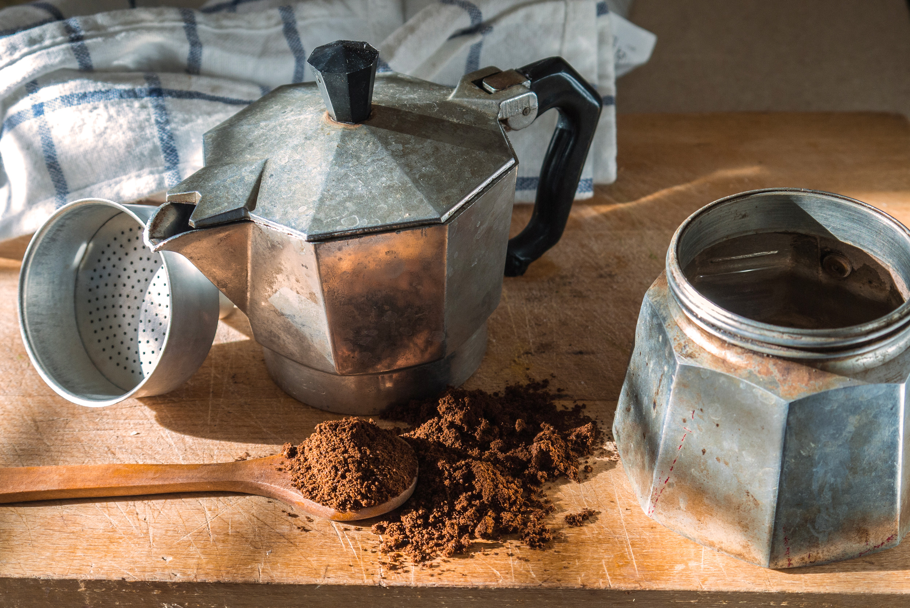

Caffè Napoletano

The speciality of the house in Napoli
In any Italian home you will always be offered a cup of coffee
like the one you will now see how to prepare
Ingredients
Steps
- Fill the bottom of the Moka until the half of the valve
- Put the coffee into the middle part of the moka doing a little mountain
- Put the last part on the top of the rest, closing the moka
- Put 2 spoon of sugar into the moka and wait for the coffee to come out